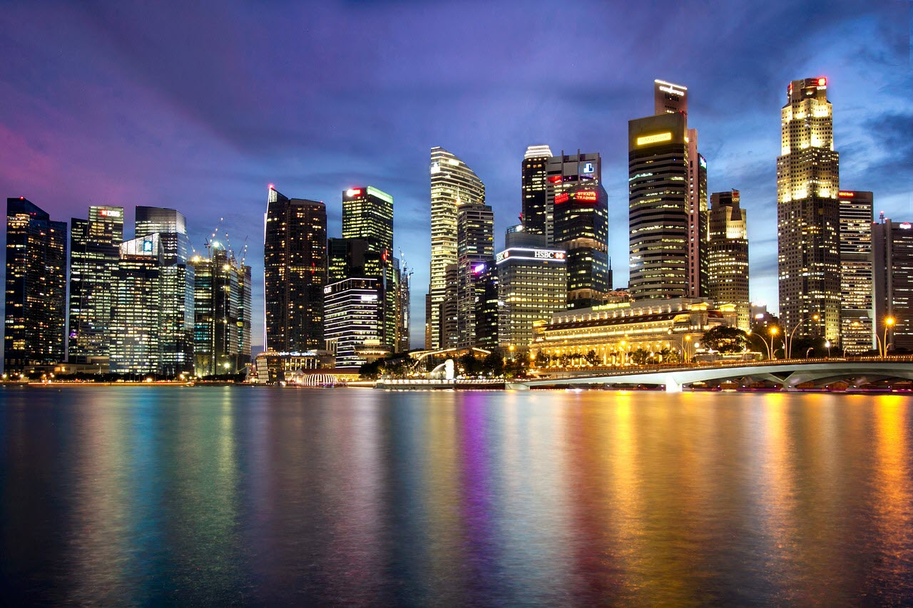
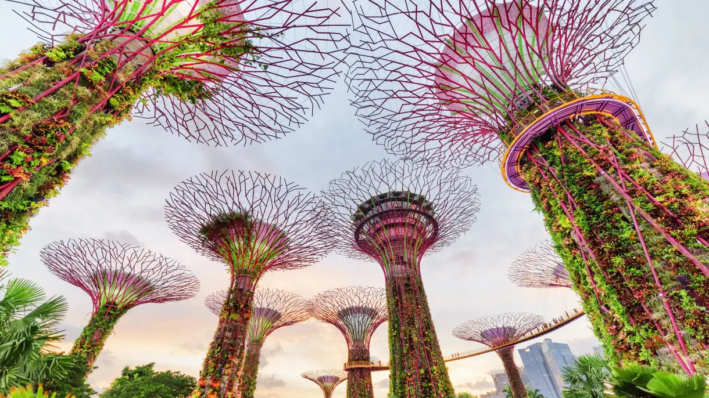

Singapour

Marina Bay est une zone huppée regroupant gratte-ciel, hôtels chics et centres commerciaux de luxe. Elle est connue pour l'imposante grande roue Singapore Flyer ainsi que les serres florales et les structures métalliques colorées (Supertrees) du parc Gardens by the Bay. Des spectacles et des expositions artistiques avant-gardistes sont organisés à l'Esplanade Theatre, un édifice d'aspect futuriste. Le quartier possède une gamme variée de restaurants, allant des zones de restauration simples aux restaurants haut de gamme.
Gardens by the Bay

Les Jardins de la Baie (Gardens by the Bay) constituent le plus grand parc de Singapour et est devenu le symbole de la ville ainsi que son attraction la plus populaire. Ils couvrent une superficie de 101 hectares et abritent plus d'un million de plantes provenant des cinq continents.
Après près de cinq ans de construction et plus d'un milliard de dollars d'investissement, les Gardens by the Bay de Singapour ont été inaugurés en juin 2012, franchissant ainsi une nouvelle étape vers la réalisation de l'objectif du gouvernement de devenir « une ville dans un jardin ».
Hormis les plantes, l'eau et le paysage lui-même, dans l'immensité de ces jardins, on trouve aussi plusieurs structures, où l’on remarque tout particulièrement les « Super-arbres » et les serres.
Super-arbres

Les « Super-arbres » (Supertrees) sont les structures les plus emblématiques du parc. Ces 18 géants mesurant entre 25 et 50 mètres de haut, en plus de donner à l'atmosphère une ambiance magique, sont entourés d'un jardin vertical extérieur et présentent des panneaux solaires au sommet.
La plupart de ces "arbres" se trouvent dans la zone connue sous le nom de Supertree Groove, au centre du parc. Si vous voulez contempler les jardins d'en haut, les deux plus grands sont reliés par une passerelle de 128 mètres de long.
À la tombée de la nuit, l'éclairage dans cette zone est spectaculaire.
Skypark

Au 57e étage du Marina Bay Sands Hotel se trouve le Skypark, un parc en plein air de 12 400 m² qui relie les trois tours de l'hôtel. Au Skypark, vous trouverez un belvédère, une boîte de nuit, un restaurant et probablement la meilleure piscine du monde.
Situé à 200 mètres de haut et d'une longueur de 150 mètres, la "Infinity Pool" du Marina Bay Sands Hotel offre de jour comme de nuit la meilleure vue sur tout Singapour. Elle est ouverte de 06h00 à 23h00.
Il faut tout de même garder une chose à l'esprit : bien que le belvédère soit ouvert à tous, pour utiliser la piscine et les jacuzzis, vous devez séjourner à l'hôtel - ce détail peut certainement influencer votre décision au moment de choisir votre logement.

Casino
Hormis son architecture révolutionnaire, cet hôtel a également marqué un tournant dans l'économie du pays, puisqu'il abrite le premier casino qui a réussi à s'installer dans la ville. Le Marina Bay Sands Hotel est donc devenu une alternative à Macao, jusqu'ici la principale destination des joueurs asiatiques.
Le casino, propriété du groupe Las Vegas Sands (propriétaire de certains des hôtels les plus importants de Las Vegas et Macao), compte plus de 2 300 machines et 13 types de jeux de table répartis sur plus de 600 tables.
Little India
Les premiers immigrants indiens furent les serviteurs de Sir Stamford Raffles qui arrivèrent à Singapour en 1819. À la fin du XIXe siècle, de nombreux autres immigrants sont arrivés à la recherche d'un travail.
Aujourd'hui, Little India est le centre névralgique de la communauté indienne à Singapour.
Temple Sri Veeramakaliamman
Une des meilleures expériences du voyage a été de pénétrer dans le temple Sri Veeramakaliamman. Ce temple a été construit en 1881 et est le plus important de la communauté hindoue.
Sri Veeramakaliamman reste fermé entre 12h15 et 16h00. Les meilleures heures pour le visiter sont : 8h00, 12h00, 18h30 et 21h00.
Si vous en avez l'occasion - faites de votre mieux pour que ce soit le cas - ne manquez pas d'assister à l'un des rites célébrés dans le temple.